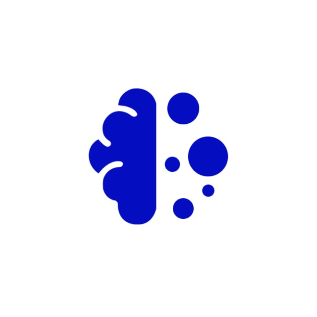

Проект по исследованию и популяризации технологий искусственного интеллекта
AI-WorkShop — проект, направленный на изучение, разработку и популяризацию технологий искусственного интеллекта, современных AI-инструментов и больших языковых моделей.
Основная цель проекта заключается в повышении уровня информированности и практических компетенций в области ИИ посредством разработки образовательных материалов, контента и программных решений.
Подробнее о проекте
Актуальность проекта
Развитие технологий искусственного интеллекта является одной из приоритетных задач Российской Федерации. Одновременно с этим сохраняется проблема нехватки квалифицированных специалистов и недостаточной информированности населения о возможностях применения ИИ.
Проект AI-WorkShop направлен на решение данной проблемы путём создания образовательных материалов, развития практических навыков и вовлечения участников в реальные задачи командной разработки.
Основные направления проекта
LLM и AI
Изучение больших языковых моделей, Transformer-архитектур и современных AI-платформ.
Backend-разработка
Проектирование серверной логики, API и backend-архитектуры проекта.
Контент и аналитика
Подготовка материалов, обзоров AI-инструментов, аналитики и образовательного контента.
Ожидаемые результаты
- Доработка AI чат-бота
- Создание образовательного AI-контента
- Популяризация технологий искусственного интеллекта
- Получение практического опыта командной разработки
- Развитие навыков backend и AI engineering